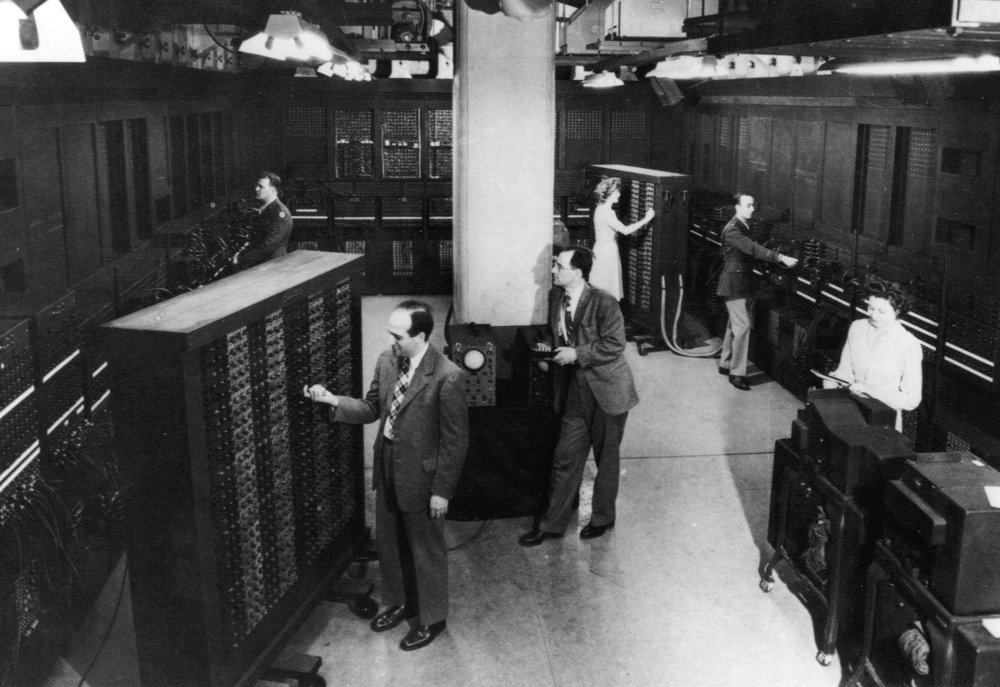

Hello, This is my site! On this site I will tell you about the some of the research about the computer.
The computer is one of the most known items in our world. There is a computer in everything, for example all of our phones and watches and televisions. All of those items have computers in them. they come in many shapes and sizes but they all originate from one computer ,ENIAC.
ENIAC is one of the most important computers in history. ENIAC (Electronic Numerical Integrator And Calculator) was the first general-purpose computer. ENIAC weighed about 30 tons and covered around 1,800 square feet. it original purpose was to be used in WWII to calculate firing tables for target accuracy. it was use for about 10 years from 1946-1955. Saldy it was shutdown on october 2nd at 11:45 pm. that ended the life of the ENIAC. you would think that if the end and you cant see it anymore, but no the ENIAC is in penn university, at The Moore School of Electrical Engineering. And you can also visit it right now for free.

The computer, is the most renowned piece of technology in mankind, has Helped Billions of lives. ComputerHope.com says “The computer is one of the most important inventions ever”. Everything from your phone to your laptop to your television is a computer. The computer make your everyday life so much easier, for example it gives you GPS on how to get to work, it lets you email your co workers, and much more. In the present day of using computers doing work on your laptop or watching a movie on your TV, but the future's looking different. In the future, we will in virtual reality, it is any kind of place you want to be but you ar in your house. you could go sky drving or play a game of chess or whatever! And Lots of people already use VR. The company's are saying that VR is Just Real life but better and more advanced. The future is looking up for us and technology. in the next few years we will all have Vr headsets and it will be more real that ever.